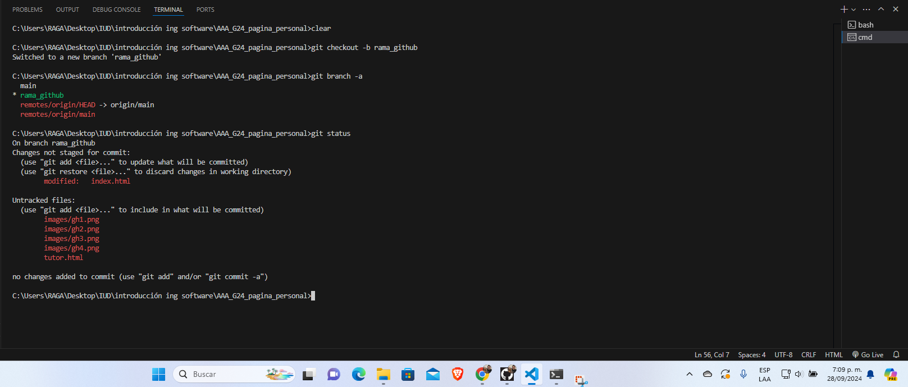
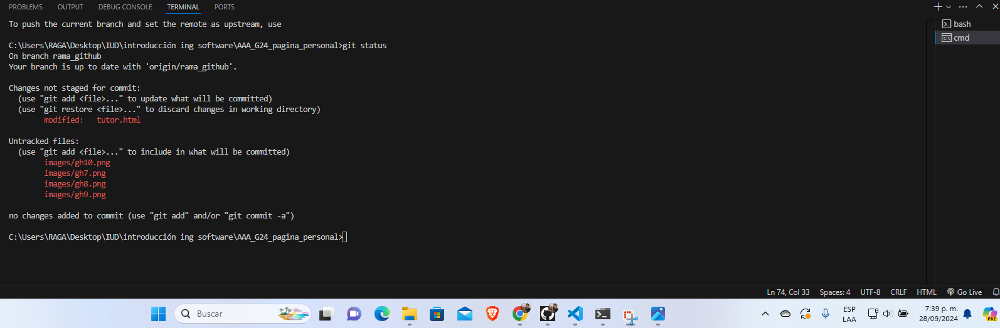
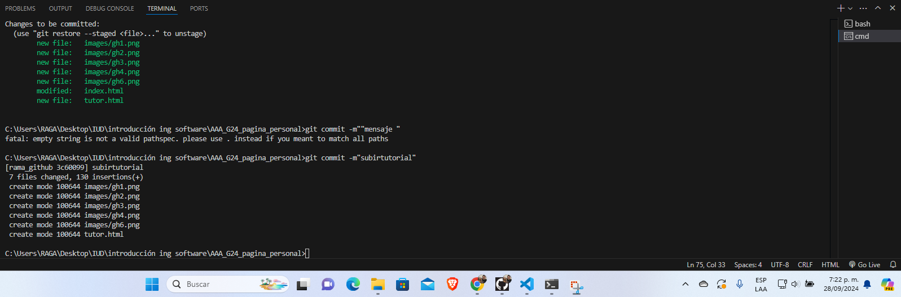
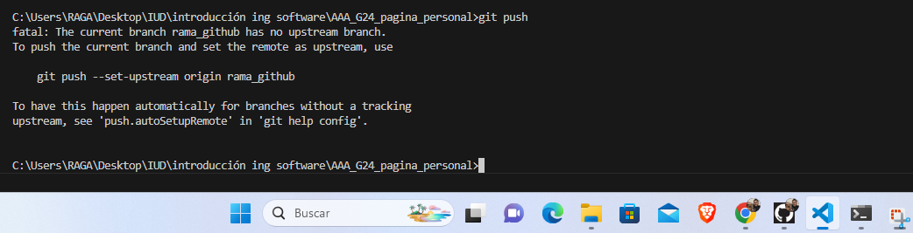
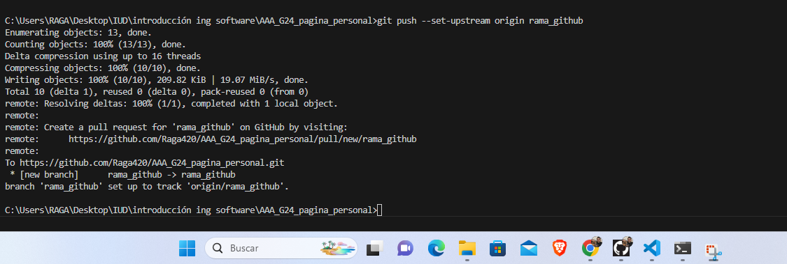

1. Inicializar el repositorio
Primero, verifica si el repositorio ya está inicializado. Si el directorio .git existe en tu proyecto, entonces Git ya está inicializado. Si no, utiliza el siguiente comando para inicializarlo:
git init
Esto crea una nueva carpeta oculta .git en tu proyecto para el control de versiones.
2. Crear una nueva rama
Antes de realizar cambios, es recomendable trabajar en una rama separada de la principal. Crea una nueva rama con el siguiente comando:
git checkout -b nombre-rama
Esto creará y cambiará a la nueva rama donde puedes trabajar sin afectar la rama principal.
3. Ver el estado del repositorio
Verifica el estado del repositorio para ver qué archivos han sido modificados o añadidos:
git status
Este comando te muestra el estado de los archivos en tu proyecto, indicando si están listos para ser commit o si necesitan ser añadidos.
4. Agregar archivos al área de preparación
Para agregar los archivos modificados al área de preparación (staging area), utiliza el siguiente comando:
git add .
Este comando agrega todos los archivos modificados. Si solo deseas agregar un archivo específico, usa git add nombre_archivo.
5. Crear un commit
Luego de agregar los archivos, guarda los cambios con un commit:
git commit -m "Mensaje descriptivo del commit"
El mensaje del commit debe ser claro para identificar los cambios que se hicieron en esta "foto" del estado de tu proyecto.
6. Subir los cambios a GitHub (Push)
Vincula tu repositorio local con uno remoto en GitHub (si aún no lo has hecho) con este comando:
git remote add origin https://github.com/tu-usuario/nombre-repositorio.git
Luego, sube los cambios con el siguiente comando:
git push -u origin nombre-rama
Este comando sube los commits a la rama correspondiente en tu repositorio remoto de GitHub.
 7. Hacer merge de las ramas
Una vez que hayas terminado de trabajar en tu rama y estés listo para combinar los cambios con la rama principal, sigue estos pasos:
Cambia a la rama principal:
git checkout master
Haz el merge de tu rama con la principal:
git merge nombre-rama
Git combinará los cambios de tu rama con la principal. Si hay conflictos, Git te pedirá que los resuelvas manualmente.

8. Subir cambios después del merge
Finalmente, después del merge, sube los cambios nuevamente a GitHub con el siguiente comando:
git push origin master
Este comando subirá los cambios combinados a la rama principal de tu repositorio remoto en GitHub.